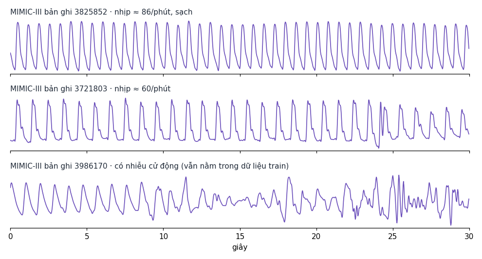

Giám khảo nghiêm và PhysioFlow-GAN
Hai GAN của app (PhysioMix và LSM-GAN) được train lại với critic mạnh hơn, rồi một bộ phân biệt (giám khảo) train lại từ đầu cho từng nguồn để thử tách tín hiệu giả khỏi tín hiệu của người thật chưa từng thấy. Trang này trình bày theo bố cục bài LSM-GAN (Ding et al., IEEE JBHI 2023): Bảng I–IV, Hình 1–9 và thuật toán chọn mô hình. Chỉ số chính là AUC của giám khảo: 0,5 nghĩa là không tách được, 1,0 nghĩa là tách hoàn toàn.
0. Tóm tắt và quyết định
Luật quyết định được ghi lại (kèm mã băm) trước khi train. Validation dùng để chọn; test chỉ được mở một lần sau khi đã lưu quyết định, với cửa sổ, nhãn nhắc, nhiễu sinh và seed giám khảo mới.
Mô hình giữ lại và đã loại 27/10/2026
Mô hình nào không cải thiện được AUC của giám khảo nghiêm thì đã gỡ code (khỏi app và khỏi nhánh nghiên cứu).
Số liệu của chúng được giữ nguyên trên trang này và trong ml/runs để đưa vào phần đánh giá của nghiên cứu.
Code vẫn còn trong lịch sử git. AUC là AUC validation của giám khảo nghiêm, trung bình 3 seed giám khảo, trên người chưa thấy;
0,5 nghĩa là không tách được. Đối chứng thật-so-với-thật (người thật khác) đạt khoảng 0,44–0,45.
| Mô hình | AUC validation | Trạng thái | Lý do |
|---|---|---|---|
| PhysioFlow-R (R1, 16 bước Heun) | 0,745 / 0,747 / 0,785 (seed 42 / 123 / 2026), TB 0,759 | giữ | Mô hình duy nhất giảm rõ từ mức 1,0; là nền của R1F |
| R1F (R1 train tiếp bằng loss flow) | chưa có | giữ | Đang train trong P5 |
| PhysioGAN-R (P5) | chưa có | giữ | Đang train trong P5 |
| PPG-physiGPT large (kiểu GPT-PPG, 99,9M) | 1,00 (d′ 8,6; 2 seed) | V1 | Đạt V1 ở tầng đặc trưng (98,1 % mức người thật); chưa đạt V2 (0,95 tuyệt đối); giám khảo nghiêm vẫn tách hết (chi tiết) |
LSM-GAN lsm_author_v3 | 1,00 | baseline | Giữ nguyên làm baseline (không train lại) |
| PhysioMix (app, vòng 9) | 0,999 | đã loại | Gỡ khỏi app |
| PhysioFlow (app, vòng 10) | 1,00 | đã loại | Gỡ khỏi app |
| PhysioMix + critic nghiêm (S / SQ) | 0,991–0,999 | đã loại | Không thấp hơn app |
| LSM-GAN-S (critic nghiêm) | 0,992–0,999 | đã loại | Không thấp hơn baseline |
| G1 flow-GAN (6 miền) | 0,993–0,995 | đã loại | Không cải thiện |
| G2 flow-GAN-LSM (BIDMC) | 1,00 | đã loại | Không cải thiện |
| G3 flow-GAN-R (P4, fine-tune đối kháng R1) | 0,958 (16 bước) – 0,974 (4 bước) | đã loại | Tệ hơn chính R1 làm teacher (0,753) |
| B1 BeatGen | 0,983–0,990 | đã loại | Không cải thiện |
| PhysioFlow finish (lp9, lp9_5, lp10, lp10_s) và + nhiễu cảm biến | 0,955–1,00 | đã loại | Không cải thiện |
Nguồn: summary.json của các vòng strict-judge-round, flowgan-round-v2, finish-round-v2, beat-round,
DECISION_R.json (P1) và DIAGNOSIS_P4.json. Đánh giá kỹ thuật về hình dạng PPG 30 s đã chuẩn hoá; không phải kiểm định lâm sàng.
P5 · PhysioGAN-R: GAN mới train từ đầu đang train, chưa có kết quả
Vòng P5 thử một hướng khác hẳn các vòng trước: một GAN thuần sinh cả record 40 s, không dùng flow-matching hay autoregressive, và chỉ điều kiện theo miền dữ liệu. Mục tiêu là AUC của giám khảo nghiêm ≤ 0,55, gần mức thật-so-với-thật. Mục này chưa có số liệu kết quả. Số liệu sẽ được thêm sau khi kernel chạy xong và đã qua bước duyệt sóng.
halovie2412/ppg-physiogan-r-p5-train-v1: RUNNING, đã chạy khoảng 6 giờ 22 phút (push lúc khoảng 05:22 UTC).
Log training chưa đọc được trong lúc kernel chạy, vì Kaggle chỉ trả log khi kernel kết thúc. Dự kiến xong khoảng 15:30–16:30 UTC
(22:30–23:30 giờ Việt Nam).Lần chạy v1 hỏng sau 68 giây do lỗi CUDA
grid_sampler_2d_backward. Lỗi đã được sửa bằng phép giãn thời gian
dùng gather, có đạo hàm bậc hai.Kernel cũ
charlesday2612/ppg-physiogan-r-p5-round-v1: CANCEL_ACKNOWLEDGED (đã dừng).Quy trình hai giai đoạn
| Bước | Nội dung | Trạng thái |
|---|---|---|
| 1. p5_train | GPU0: GAN seed 42 và 2026. GPU1: GAN seed 123, rồi R1F (R1 train tiếp). Mỗi 20 phút một C2ST nhỏ chọn checkpoint tốt nhất. | đang chạy |
| 2. Preview | Sinh sóng PPG và so trực tiếp với dataset, ngay trong kernel train: log-PSD dải mạch 0,5–8 Hz và dải chặn 8–20 Hz, ACF đến 5 s, 9 đặc trưng hình thái, KS của giá trị mẫu, và kiểm tra sao chép. Mỗi khoảng cách được đặt cạnh khoảng cách thật-so-với-thật. | chờ |
| 3. Duyệt chung | Bạn và Claude xem SIMILARITY_P5.json, hình sóng và balance.json, rồi quyết định sửa hay giữ. | chờ |
| 4. p5_judge | Giám khảo nghiêm chấm trên người validation, sau đó mở test một lần. Chỉ push sau khi đã duyệt ở bước 3. | chưa push |
(a) Generator PhysioGAN-R (7,19M tham số)
RView áp đúng bộ lọc mà cửa sổ thật đã qua. Nhờ vậy mạng không phải tự học cách tạo dải chặn −95 dB. Không có điều kiện nhịp tim, SpO2 hay nhịp không đều, nên chỉ số C (độ khớp điều kiện) không được đo trong vòng này.
Khác gì so với các mô hình trước
| Mô hình | Loại | Điểm chính |
|---|---|---|
LSM-GAN lsm_author_v3 | GAN | Topology của tác giả, giữ nguyên làm baseline |
| PhysioMix | GAN | Hinge loss, sinh thẳng cửa sổ v3, có điều kiện nhịp tim |
| G3 PhysioFlow-GAN | Flow student | Student 4 bước bị kéo về một teacher đã đóng băng |
| R1 / R1F | Flow-matching | Không phải GAN, đóng vai fallback của vòng này |
| P5 PhysioGAN-R | GAN train từ đầu | Sinh record 40 s trước khi lọc; loss relativistic pairing kèm R1/R2; điều kiện chỉ gồm miền và context |
(b) Discriminator: critic thay đổi, giám khảo giữ nguyên
- Vẫn là
StrictCriticvới 4 view: time, log-STFT, ACF và band 7–14 Hz. - Width tăng từ 32 lên 48 (3,56M tham số), thêm minibatch-std chống mode collapse, chiếu điều kiện theo miền và context.
- Loss
softplus(D(fake) − D(real))với penalty R1/R2 (γ = 1, lazy 4) theo Huang et al. 2024, thay cho hinge. - lr của critic bằng một nửa generator (1e-4 so với 2e-4), Adam với β = (0; 0,99).
- ADA (Karras et al. 2020): augment mọi cửa sổ critic nhìn thấy (gain/offset, giãn thời gian ±10 %, nhiễu 0,02) với xác suất p. p tự điều chỉnh để giữ rt = E[sign(D(real) − D(fake))] ở mức 0,6, với p tối đa 0,8.
StrictJudge(time + spectral + ACF), 3000 bước, seed giám khảo 0–2.- Train lại từ đầu cho mỗi nguồn, chấm trên người validation, rồi mở test một lần.
- Không tham gia train và không bị làm yếu. Việc cân bằng chỉ nằm ở critic.
- Đối chứng null (người thật khác) phải có AUC trong [0,40; 0,60] thì vòng mới hợp lệ.
Luật quyết định P5 (ghi trước khi train, có mã băm)
- Các nguồn được chấm: real_other_people, r_pipeline, r1_s16 (seed ship của P1, 16 bước Heun), r1_s32, r1_s64, r1f_s64 và 3 seed GAN.
- best_r1 = r1_s16, trừ khi một biến thể khác thấp hơn nó quá max(0,02; SD).
- GAN chỉ được giữ khi mọi seed đều qua kiểm tra sao chép (≤ 5 % cửa sổ gần dữ liệu train hơn phân vị 1 % của khoảng cách thật-thật) và thấp hơn best_r1 quá max(0,02; SD giữa các seed). Nếu không, quay về nhánh R1.
- Đạt mục tiêu khi AUC ≤ 0,55. Test chỉ chấm một lần.
PPG-physiGPT V1 đạt (ngưỡng tương đối) · V2 chưa
Mô hình kiểu GPT (theo GPT-PPG 2025): vẽ sóng PPG 30 s từng giây một, học từ PPG bệnh viện (MIMIC-III), train trên Kaggle 2 × T4. Sinh không điều kiện (không điều khiển nhịp tim).
Hai tầng đánh giá
Cả hai tầng dùng người chưa từng train. Giám khảo nghiêm (C2ST, 3,6M tham số, 3 nhánh thời gian / phổ / tự tương quan) giữ nguyên; AUC đã bão hoà ở 1,0 nên báo thêm d′ = (điểm trung bình sóng sinh − điểm trung bình sóng thật) / độ lệch chuẩn gộp, tính từ điểm thô của giám khảo. Tầng đặc trưng: với mỗi đặc trưng tính 1 − KS giữa 2.000 cửa sổ sinh ra và 180 người thật held-out, cộng bộ phân loại chỉ nhìn đặc trưng. V1 (đang dùng): trung bình ≥ 95 % mức của người thật so với người thật khác. V2 (mục tiêu sau): trung bình ≥ 0,95 tuyệt đối và độ chính xác của cây ≤ 0,60.
| Biến thể | Bước | Flow held-out | AUC nghiêm | d′ (theo seed) | 1 − KS (so với mốc thật) | Cây (acc.) |
|---|---|---|---|---|---|---|
| base, dừng plateau (chưa decay) | 14.500 | 0,0645 | 1,00 | 17,9 (20,8; 20,1; 12,8) | — | — |
| base, decay 3k | 17.500 | 0,0591 | 1,00 | 12,2 (10,8; 12,1; 13,7) | — | — |
| base, decay 3k, không clamp | 17.500 | 0,0591 | 1,00 | 11,2 (12,0; 10,4) | — | — |
| base, decay 3k, 128 bước ODE | 17.500 | 0,0591 | 1,00 | 15,1 (1 seed) | — | — |
| base, giữ 7k + decay 3k (longer) | 24.500 | 0,0581 | 1,00 | 9,0 (10,4; 7,7) | — | — |
| base, longer + loss độ sắc 0,25 | 27.500 | 0,0578 | 1,00 | 7,5 (8,0; 7,0) | — | — |
| base, longer + loss độ sắc 8 | 27.500 | 0,0578 | — | — | 0,933 (97,3 %) | 0,639 |
| large 99,9M, dừng plateau + decay 3k (V1) | 25.000 | 0,0575 | 1,00 | 8,6 (8,0; 9,3) | 0,941 (98,1 %) | 0,618 |
| người thật so với người thật khác | 0,54 (1 seed) | 0,14 | 0,960 | 0,50 |
Đối chứng trên sóng thật (seed 0): đảo pha ngẫu nhiên AUC 1,0, d′ 7,7; nhiễu 1 % d′ 16,5; lọc vòng d′ 15,0. Biến thể tốt nhất đang ở mức tách
của một bản sóng thật bị đảo pha. Bản large train 22.000 bước trong 7,7 giờ (938 cửa sổ/s, 6,9 GB mỗi T4), dừng ở checkpoint tốt nhất khi flow held-out tăng,
rồi decay 3.000 bước trong 0,85 giờ. Số liệu: docs/physigpt/results.json, tạo bởi docs/physigpt/build_results.py từ bản ghi kernel trong docs/physigpt/evidence/.
Đặc trưng nào còn thiếu (large so với base, 1 − KS)
| Đặc trưng | base | large | Người thật khác |
|---|---|---|---|
độ đều giữa các nhịp (acf_peak) | 0,881 | 0,918 | 0,947 |
| nhịp tim | 0,931 | 0,950 | 0,967 |
| kurtosis (dáng nhịp) | 0,920 | 0,950 | 0,940 |
| trọng tâm phổ | 0,897 | 0,916 | 0,952 |
| độ lệch chuẩn sai phân bậc 2 (chi tiết mịn) | 0,895 | 0,905 | 0,963 |
| công suất 5–8 Hz | 0,895 | 0,885 | 0,974 |
Model to hơn làm nhịp đều hơn, nhịp tim và dáng nhịp sát thật hơn, nhưng chi tiết tần số cao (5–8 Hz, sai phân bậc 2) vẫn thiếu;
cả model lớn lẫn loss độ sắc đều chưa đóng được khoảng này. Flow loss held-out đo trên các bản ghi cũng dùng để chọn best.pt, nên chỉ là số đo độ khớp.
Dữ liệu dùng để học

PPG thật của bệnh nhân ICU (MIMIC-III, giấy phép mở), đã cắt về khuôn của dự án. Bộ 200 triệu đoạn của GPT-PPG không công khai.
Model học thế nào (video)
Model nhìn các giây đã có (tím), rồi học cách biến nhiễu thành giây tiếp theo (vàng). Đây là minh hoạ đích học trên sóng thật, không phải sóng do model vẽ.
Bên trong model
- 30 giây sóngcắt thành 30 mảnh, mỗi mảnh 1 giây
- 8 lớp transformermỗi mảnh chỉ nhìn các mảnh trước nó
- Vẽ mảnh tiếp theođi từ nhiễu tới sóng trong 32 bước nhỏ
- Lặp 30 lầnra đủ 30 giây, chuẩn hoá về [0, 1]
Bản base 30,7M tham số, bản large 99,9M. Sơ đồ chi tiết nằm trong mục thu gọn bên dưới.
Học tiếp liên tục
Mỗi đợt học thêm vài triệu đoạn mới, trộn 25 % đoạn cũ để không quên, nối tiếp từ điểm ● mà không phải học lại từ đầu. Cuối mỗi đợt có một model để chấm. Đây là pretrain liên tục, không phải reinforcement learning.
Chi tiết kỹ thuật (cho báo cáo nghiên cứu)
| Phần | GPT-PPG | PPG-physiGPT |
|---|---|---|
| Dữ liệu | ICU UCSF, hơn 200 triệu đoạn, không công khai | MIMIC-III WDB v1.0 (ODbL), 59.344 bản ghi người lớn; loại 715 bản ghi gốc của PERFORM; 2 % bản ghi làm validation |
| Token, khối | 30 patch × 40 mẫu; RMSNorm, RoPE, attention nhân quả | Giống; feed-forward SwiGLU; mỗi miền một vector start |
| Output | Logit-Laplace (μ, b mỗi mẫu) | Head flow-matching cho cả patch (Heun 32 bước), logit-Laplace làm loss phụ × 0,1 |
| Train | Không nêu | DDP fp16, AdamW (0,9; 0,95), wd 0,1, batch 1024, lr 6e-4, lịch warmup-stable-decay |
- Đã kiểm chứng: 38/38 test trên CPU; train DDP fp16 trên Kaggle 2 × T4 (base 2.498 cửa sổ/s, large 938 cửa sổ/s, cả hai GPU); kết quả hai tầng ở bảng trên.
- Chưa kiểm chứng: MIMIC-III có đủ 200 triệu đoạn hay không; tốc độ sinh trên Pi; fine-tune trên người của dự án.
- Lỗi lần chạy 1:
KeyError: 'files', vì tập PERFORM Large lưu tên ởmimic_details.file. Đã sửa ở commit73910b24. - Code ở
ml/kaggle_physigpt/; hình và video tạo bằngscripts/build_physigpt_media.py. Không phải kiểm định lâm sàng.
Hình 1 · Quy trình tổng thể PhysioFlow-GAN và giám khảo nghiêm
PhysioFlow-GAN không học generator từ đầu. Nó lấy U-Net vận tốc của PhysioFlow đang chạy trong app, rút còn 4 bước Heun, rồi tinh chỉnh bằng đối kháng với StrictCritic. Thứ giữ mô hình khỏi trôi là neo chưng cất về bản PhysioFlow 16 bước đóng băng. Thêm vào đó, số hạng cảm biến (mức nhiễu học được theo miền) cho phần dư 8–20 Hz đi qua đúng bộ lọc data-view mà dữ liệu thật đã đi qua. Nhánh G2 thêm loss phổ log của LSM-GAN và chỉ học trên BIDMC. Sau huấn luyện, chất lượng được đo riêng bằng giám khảo nghiêm: một bộ phân biệt mới, huấn luyện lại từ đầu cho từng nguồn, chấm AUC trên người chưa từng thấy. Hình này chỉ mô tả quy trình trong mã; nó không chứa kết quả đo.
| Hằng số trong hình | Giá trị | Nguồn trong mã |
|---|---|---|
| Bước Heun học sinh / thầy | 4 / 16 | flow_gan.py:33 |
| Lượt U-Net mỗi lần sinh | 7 (2·3 + 1) / 31 (2·15 + 1) | flow_gan.py:71-75; flow.py:402-409 |
| σ cảm biến: khởi tạo / trần | 0.03 / 0.1, mỗi miền một r_d | flow_gan.py:34, 50-52, 57-58 |
| Hoán vị nhiễu cảm biến | seed 20261023 | flow_gan.py:35, 53, 82 |
| Lọc data-view v3 | Butterworth bậc 4, 0.5–8 Hz, |H|², đệm phản xạ 240 mẫu | view.py:14; physio.py:44-51; flow.py:34, 425-430; flow_gan.py:55, 83 |
| Hàng điều kiện c | 11 = 6 miền + 5 nhãn (bố cục v2) | experiment_v3.py:58; physio.py:144-145 |
| lr critic / generator, lịch | 2e-4 / 2e-5, cố định | experiment_v3.py:134, 222-226, 391-393 |
| Adam β | (0, 0.99) cho cả hai | experiment_v3.py:392-393 |
| Neo chưng cất | hệ số 100, mỗi 4 bước, nhân 4 | experiment_v3.py:134-135, 460-463 |
| R1 lười | mỗi 16 bước, ½ · 16 · r1_weight, r1_weight = 1 | experiment_v3.py:173-177, 426, 443-445 |
| Clip gradient critic / generator | 30 (mọi bước) / 10 | experiment_v3.py:134, 449-450, 470 |
| EMA generator | 0.995 | physio.py:493; experiment_v3.py:474 |
| Batch / số bước / hạn giờ | 32 / 4000 / 4.5 h | experiment_flowgan.py:50, 94-95 |
| Chấm checkpoint | mỗi 500 bước từ bước 1000 và bước cuối; G1 S_real + 0.5·C, G2 Q_bidmc | experiment_v3.py:476-484; experiment_flowgan.py:98 |
| Seed huấn luyện / seed giám khảo | 42, 123, 2026 / 0, 1, 2 (+10 val, +20 test) | experiment_flowgan.py:96-97; experiment_strict.py:41 |
| Giám khảo "strict" | 3000 bước, batch 64, lr 3e-4, cắt 1024 | strict_judge.py:47, 50; experiment_flowgan.py:32 |
| Cửa sổ giám khảo | 512 / 64 / 128 mỗi miền | strict_judge.py:46 |
| Khoảng null hợp lệ / ngưỡng C | [0.40, 0.60] / 0.10 | experiment_strict.py:42; experiment_flowgan.py:41 |
Đường dữ liệu có trong mã nhưng không vẽ mũi tên: z là nhiễu ε (hoán vị) của số hạng cảm biến và c chọn σ_d
(flow_gan.py:82–83); z, c cũng vào thầy (experiment_v3.py:462); c vào số hạng chiếu điều kiện của
StrictCritic (strict_judge.py:251); y và x vào L_G qua 0,5·L_dist (experiment_v3.py:457). σ_d (tham số
r_d) cũng được train.
Hình 1: Quy trình PhysioFlow-GAN (A) và giám khảo nghiêm (B), vẽ theo flow_gan.py, experiment_v3.py (FLOWGAN, train_conditional), experiment_flowgan.py, experiment_strict.py và strict_judge.py. Chú thích ở experiment_v3.py:132 ghi thầy chạy 32 lượt U-Net; vòng lặp thực tế (flow.py:402-409, bước cuối Euler) cho 31.
Bảng I · Số người và số cửa sổ theo tập
Gói dữ liệu v3: cửa sổ PPG 30 s, lấy mẫu 40 Hz, lọc 0,5–8 Hz rồi chuẩn hoá về [0, 1]. Tách theo người: mỗi người chỉ nằm trong một tập. Các miền ngoài (CapnoBase, PTT) không dùng ở đây.
Tập của giám khảo (lấy từ sets.json của từng vòng)
Hình 2 · Ví dụ đoạn PPG, vùng artifact tô tím
Giống Hình 2 của bài báo: các đoạn 30 s, mỗi đoạn thuộc một nhóm tỷ lệ artifact. Vùng tím do luật SQI theo nhịp
đánh dấu (ml/kaggle_multidomain/artifact_sqi.py), không phải nhãn của chuyên gia.
Mẫu sinh của từng mô hình, cùng luật đánh dấu
Giám khảo nhìn vào đâu
Với mỗi nguồn, một cửa sổ thật và một cửa sổ giả có logit gần trung vị. Vùng tím: 15% mẫu có |∂logit/∂x| (làm mượt 0,5 s) lớn nhất của giám khảo nghiêm đã train cho nguồn đó (kernel report_figures, seed giám khảo đầu tiên của validation).
Hình 2: (a) cửa sổ thật, ưu tiên người validation/test (ghi “người train” khi nhóm đó chỉ có ở người train); (b) một cửa sổ sinh của mỗi nguồn, nhắc bằng nhãn của người train.
Hình 3 · Phân bố cửa sổ theo tỷ lệ artifact
Bốn nhóm như bài báo: 0%, (0–20%], (20–60%], (60–100%]. (a) dữ liệu thật, AF và không AF; (b) mô hình sinh có tái tạo được tỷ lệ artifact của dữ liệu thật hay không (cùng số cửa sổ và cùng nhãn nhắc như Hình 9).
Thật so với sinh
Hình 3: số cửa sổ (a) và tỷ lệ cửa sổ (b) theo nhóm artifact.
Hình 4 · Kiến trúc mạng
Ba mạng, vẽ theo đúng lớp trong mã. (a) Generator là UNet1D của PhysioFlow (5 mức độ phân giải, FiLM từ nhúng thời gian cộng nhúng điều kiện, attention ở hai mức sâu nhất) bọc trong FlowGAN: tích phân Heun 4 bước, chuẩn hoá, số hạng cảm biến và bộ lọc kết thúc. (b) StrictCritic là critic của GAN: ba góc nhìn như giám khảo; nhánh thời gian và phổ hẹp bằng một nửa (32 và 64 kênh), nhánh ACF cùng cỡ (200→128→64); mọi lớp có spectral norm, không có lớp chuẩn hoá, mỗi góc nhìn một logit hinge cộng số hạng chiếu điều kiện. (c) StrictJudge là bộ phân biệt dùng để đánh giá: cùng ba góc nhìn, nhánh thời gian và phổ rộng gấp đôi (64 và 128 kênh), cùng MLP ACF, có GroupNorm và Dropout, ra một logit duy nhất. Số tham số được đếm bằng cách dựng mô-đun trong PyTorch với hàng điều kiện 11 phần tử.
(a) Generator PhysioFlow-GAN: UNet1D trong vỏ FlowGAN
ml/kaggle_multidomain/flow.py (UNet1D, ResBlock, Attention, FlowGenerator, finish) và ml/kaggle_multidomain/flow_gan.py (FlowGAN). FlowGAN dựng FlowGenerator với width = 1 và flag_scaffold = True.
(b) StrictCritic: critic của GAN
ml/kaggle_multidomain/strict_judge.py (CriticBlock, CriticTime, CriticSpectral, CriticAcf, StrictCritic). experiment_v3.build dựng StrictCritic(size) với width = 32, minibatch_std = False.
(c) StrictJudge: bộ phân biệt đánh giá (giám khảo nghiêm)
ml/kaggle_multidomain/strict_judge.py (Block, TimeBranch, SpectralBranch, AcfBranch, StrictJudge, fit, scores). Kind "strict" dùng cả ba nhánh, width = 64.
| Mạng | Phần | Số tham số |
|---|---|---|
| Generator (FlowGAN) | ResBlock mã hoá / giữa / giải mã | 1 459 808 / 473 600 / 3 326 496 |
| Attention mã hoá / giữa / giải mã | 413 440 / 103 360 / 620 160 | |
| Nhúng t / nhúng c / Conv vào / giảm mẫu / tăng mẫu / lớp ra | 98 816 / 69 120 / 928 / 141 696 / 215 552 / 161 | |
| UNet1D (học sinh; thầy là bản sao đóng băng cùng cỡ) | 6 923 137 | |
| sensor_raw (r_d, một mỗi miền) | 6 | |
| Tổng được huấn luyện | 6 923 143 | |
| StrictCritic | Nhánh thời gian / phổ / ACF | 735 616 / 94 720 / 33 984 |
| 3 đầu SN Linear / 3 phép chiếu điều kiện | 579 / 6 912 | |
| Tổng | 871 811 | |
| StrictJudge ("strict") | Nhánh thời gian / phổ / ACF | 2 943 360 / 354 560 / 33 984 |
| Đầu MLP | 279 041 | |
| Tổng | 3 610 945 |
Đếm bằng python3 + torch trên máy local: dựng FlowGAN(11, …, 6), StrictCritic(11), StrictJudge() rồi cộng numel() của parameters(); với spectral norm, mỗi trọng số chỉ tính một lần (weight_orig). Hàng điều kiện 11 là của gói v3 dùng trong kernel flow-GAN.
Hình 4: Kiến trúc generator PhysioFlow-GAN (a), critic StrictCritic (b) và giám khảo StrictJudge (c). Chiều dài 1024 ở (b) và (c) là đoạn cắt 25.6 s; trong (b) độ dài sau mỗi tầng là 1024, 512, 256, 128 và STFT cho 65 bin × 65 khung, cùng con số cho (c). Mọi kênh, kernel và stride lấy từ flow.py:114-215, 360-412, flow_gan.py:43-87 và strict_judge.py:64-253.
Hình 5 · Các khoảng cách và hàm loss
Bốn thứ quyết định generator học gì. (a) và (b) là hai khoảng cách của loss LSM, đúng như train_lsm.spectral_loss tính: cửa sổ 30 s được cắt thành 5 khối 10 s chồng nhau 50%, mỗi khối thành một phổ log chuẩn hoá 201 bin; M so mọi cặp khối giả–thật, C so các khối của cùng một tín hiệu giả với nhau. Chỉ nhánh G2 dùng hai số hạng này. (c) là neo chưng cất về PhysioFlow 16 bước. (d) ghép tất cả thành loss generator và loss critic đúng như train_conditional làm, kèm lịch các số hạng “lười” trong một chu kỳ 16 bước.
(d) Loss generator — experiment_v3.py:457-466
LG = − 1/(3B) · Σn Σk Dk(yn, cn) + 0.5 · Ldist(y, x) + [s mod 4 = 0] · 4 · 100 · Ldistill + [lsm_loss] · (M + C)
Dk(x, c) = wk · fk(x) + bk + fk(x) · (Pk c + qk) / √Fk, Fk = 384, 128, 64
Ldist(y, x) = Σb ∈ {160, 400, 800} ⅓ · SmoothL1( sortn log pb(y), sortn log pb(x) ) + MSE( sortn ρ(y), sortn ρ(x) )
Loss critic — experiment_v3.py:426-454
LD = 1/(3B) · Σn,k max(0, 1 − Dk(xn, cn)) + 0.5 · 1/(3B) · Σn,k max(0, 1 + Dk(yn, cn)) + 0.5 · Llệch + [s mod 16 = 0] · R1
Llệch = Σn mn · ⅓ Σk max(0, 1 + Dk(xn, cn−1)) / max(1, Σn mn)
R1 = ½ · 16 · γ · 1/B · Σn ‖ ∇xn ⅓ Σk Dk(xn, cn) ‖², γ = r1_weight = 1; ‖∇θD‖ ≤ 30, ‖∇θG‖ ≤ 10
- s: chỉ số bước; B = 32; k = 1, 2, 3 là góc nhìn thời gian, phổ, ACF; [·] bằng 1 khi mệnh đề đúng, 0 khi sai.
- y = G(z, c) sau cảm biến; x̂ là đầu ra sạch; x là cửa sổ thật cùng batch. Critic ở chế độ train trong cả hai lượt, nên mỗi lần gọi lại cắt ngẫu nhiên 1024 mẫu. Ở lượt critic, y đã tách gradient.
- fk: vector đặc trưng của nhánh k sau pooling; wk, bk: đầu SN Linear Fk→1; Pk, qk: SN Linear 11→Fk (strict_judge.py:235-251).
- Ldist (models.distribution_loss, models.py:64-83): pb là phổ trung bình của các khối Hann dài b, chồng 50%, chuẩn hoá tổng 1, bỏ bin 0, log(p + 10⁻⁶); ρ là ACF trễ 1…200 chia ACF(0); sortn xếp theo batch để so phân bố biên, không ghép từng cặp người. FLOWGAN không bật domloss.
- cn−1: hàng điều kiện dịch một vị trí trong batch (c.roll(1)); mn = 1 khi khác miền, hoặc khi cả hai biết nhịp và nhịp lệch quá 10 bpm.
- [lsm_loss] chỉ đúng cho G2_flowgan_lsm_bidmc (experiment_v3.py:137); M, C ở (a), (b), mỗi số hạng hệ số 1.
Hình 5: (a) khoảng cách khớp và (b) khoảng cách tự nhất quán của loss LSM theo train_lsm.py:92-122; (c) neo chưng cất theo flow_gan.py:60-101 và experiment_v3.py:460-463; (d) lịch và công thức theo experiment_v3.py:406-474. Đường sóng ở (a), (b) chỉ là minh hoạ dạng xung, không phải dữ liệu.
Thuật toán
Ba hộp giả mã dưới đây viết lại đúng những gì mã nguồn đang làm: (1) chọn checkpoint trong lúc train GAN, (2) giám khảo nghiêm (C2ST) chấm điểm, (3) luật quyết định đã ghi trước khi train. Mọi hằng số đều lấy từ mã; nguồn từng dòng nằm trong mục “Nguồn trong mã” dưới mỗi hộp. Đây là đánh giá kỹ thuật về hình dạng sóng PPG 30 s đã chuẩn hoá, không phải thẩm định lâm sàng, và chưa đo trên Pi/DAC/OPT101.
- Vào:arm (cấu hình config(arm)), seed, gói train+validation, số bước T (flow-GAN 4000, vòng strict 20000), batch B = 32, chu kỳ đánh giá I = 500, hạn giờ deadline (flow-GAN 4.5 h, strict 10 h)
- Ra:best.pt (generator EMA tốt nhất), generator_cpu.ts, S_arm, gates, eligible
- Định nghĩa:Q_pool = MMD²_acf + MMD²_logPSD + MMD²_morph + 0.5(1 − recall) + 0.25(1 − precision) (k = 5 láng giềng; n = min(256, số cửa sổ validation của pool))
- S_real = Σ w·Q_pool + 0.25·|ln ρ|, w: gxu_finger 0.35 · perform_large 0.25 · bidmc 0.15 · perform_cohort (af + non_af) 0.15 · wrist 0.10
- ρ = median pdist(đặc trưng hình thái của fake, mọi pool) / median pdist(đặc trưng hình thái của replay train)
- C = 0.5·min(MAE_in/10, 2) + 0.25·min(MAE_ext/10, 2) + 0.25(1 − Spearman) + 0.25(1 − AUC_irr) (lưới 40…180 bpm bước 10; “in” = 60…140 bpm; σ nhịp 0.02 / 0.20; không đo được nhịp = lỗi 20 bpm)
- torch.manual_seed(seed); G, D ← build(cfg) ▷ flow-GAN: G = FlowGAN (student 4 bước Heun) khởi tạo từ trọng số U-Net PhysioFlow của app; teacher = bản sao đóng băng của G, 16 bước; D = StrictCritic
- Ĝ ← bản sao EMA của G, không gradient
- optG ← Adam(lr·g_lr/lr, β = (0, 0.99)); optD ← Adam(lr, β = (0, 0.99)) ▷ flow-GAN: lr = 2·10⁻⁴, g_lr = 2·10⁻⁵
- ids, p ← balanced_pool(train, cfg.train_domains) ▷ G2_flowgan_lsm_bidmc: chỉ bidmc
- best ← +∞; best_step ← 0
- for t = 1 … T do
- if now > deadline then stopped_at_step ← t − 1; break
- η ← learning_rate(cfg, t − 1, T) ▷ hằng số (flow-GAN), hoặc cosine: lr·(0.1 + 0.45(1 + cos(π·(t − 1)/T))), giảm dần tới 10%
- x ← B cửa sổ thật rút theo p; c ← điều kiện của chính các cửa sổ đó; z ~ N(0, I)
- L_D ← relu(1 − D(x, c)) + 0.5·relu(1 + D(G(z, c), c)) + 0.5·relu(1 + D(x, c̃)) ▷ c̃ = c cuộn 1 hàng; bản v2 chỉ tính cặp khác miền, hoặc cả hai nhịp đã biết và lệch > 10 bpm
- if t mod 16 = 0 then L_D ← L_D + 0.5·16·r1_weight·‖∇ₓD(x, c)‖² ▷ lazy R1; r1_weight mặc định 1, arm _r1w 0.1
- cắt ‖∇D‖ tại d_clip (mặc định 10; critic strict 30; ×16 ở bước R1 nếu r1_scaled_clip); đếm d_clipped; optD.step
- L_G ← −D(G(z, c), c) + 0.5·distribution_loss(G(z, c), x) ▷ phổ ở khối 160/400/800 mẫu + ACF, so phân bố đã sắp xếp
- if domloss then L_G ← L_G + 0.5·domain_distribution_loss ▷ cùng loss, tính trong từng miền có ≥ 3 cửa sổ
- if flow-GAN and t mod 4 = 0 then L_G ← L_G + 4·100·MSE(x̂_clean, teacher(z, c))
- if lsm_loss then L_G ← L_G + L_match + L_self ▷ spectral_loss, ghép all_pairs, trọng số 1 và 1
- if L_G + L_D không hữu hạn then dừng với lỗi
- cắt ‖∇G‖ tại 10; optG.step
- Ĝ ← 0.995·Ĝ + 0.005·G ▷ update_ema; buffer chép thẳng
- if (t ≥ min(1000, T) and t mod I = 0) or t = T then
- S_real, ρ, {Q_pool} ← s_real(Ĝ, seed + 10000) ▷ prompt từ nhãn cửa sổ train, tham chiếu là cửa sổ validation
- C ← controllability(Ĝ, n = 8)
- if cfg.train_domains then v ← mean_{d ∈ train_domains} Q_{POOL_OF[d]} ▷ arm một miền: C vẫn được tính và ghi, nhưng không vào v
- else v ← S_real + 0.5·C ▷ arm diffusion: v ← S_real
- ghi history.json (v, S_real, C, ρ, Q từng pool, d_clipped, …)
- if v < best then best ← v; best_step ← t; lưu Ĝ vào best.pt
- lưu last_training_state.pt (G, Ĝ, D)
- score_arm — validation, seed mới, tại checkpoint đã chọn
- Ĝ ← best.pt; S_real′, ρ′ ← s_real(seed + 30000); C′ ← controllability(seed + 30000)
- AUC_c2st ← c2st(seed + 31000) ▷ probe đạo hàm nhỏ, 1000 bước
- S_arm ← S_real′ + 0.5·C′ + 0.5·max(0, AUC_c2st − 0.5)
- probe ← 64 cửa sổ prompt gxu_finger, nhiễu seed + 32000
- gates ← finite(probe), not flat (ptp < 10⁻⁶), 0.75 ≤ ρ′ ≤ 1.25, d_clipped ≤ 1% số bước tính đến lần đánh giá cuối (hàng cuối của history.json)
- traced ← TorchScript (model.export nếu có, ngược lại torch.jit.trace); assert_close ở 3 prompt (45 bpm σ 0.02, 130 bpm σ 0.2, 175 bpm σ 0.1); lưu generator_cpu.ts
- latency: 1 luồng CPU, 3 lần chạy nóng + 20 lần đo; latency_ok ← trung vị < latency_limit_ms ▷ mặc định 50 ms; flow, flow-GAN 5000 ms; đo trên CPU máy Kaggle, chưa đo trên Pi
- eligible ← mọi gate ở dòng 32–34 đều đạt
- return best_step, best, S_arm, gates, eligible
Nguồn trong mã (file:dòng)
- Vào: T
experiment_flowgan.py:94,experiment_strict.py:316; B = 32experiment_flowgan.py:50,experiment_strict.py:101; I = 500experiment_flowgan.py:98,experiment_strict.py:322; deadlineexperiment_flowgan.py:95,110,experiment_strict.py:318,340 - Q_pool
experiment_v3.py:276–279; k = 5experiment_v3.py:247; nexperiment_v3.py:261,266,558,experiment_flowgan.py:99,experiment_strict.py:323; đặc trưng ACF/log-PSDtrain_lsm.py:174–183, băng thông MMDbenchmark.py:46 - S_real, ρ
experiment_v3.py:272,296–297; trọng sốexperiment_v3.py:57; poolexperiment_v3.py:55–56 - C
control.py:66; lưới, “in”, σ, lỗi NaNcontrol.py:17–20 - 1
experiment_v3.py:375,381–386,189–193, student_steps = 4experiment_v3.py:135· 2experiment_v3.py:390,physio.py:486–489· 3experiment_v3.py:391–393,134· 4experiment_v3.py:397,137· 5experiment_v3.py:401 - 6–7
experiment_v3.py:406–409· 8experiment_v3.py:411–413,222–226, flow-GAN hằngexperiment_v3.py:128,173· 9experiment_v3.py:414–416,423· 10experiment_v3.py:428–440· 11experiment_v3.py:426,442–446, r1_weightexperiment_v3.py:174,76· 12experiment_v3.py:449–454, 30experiment_v3.py:122,134, r1_scaled_clipexperiment_v3.py:73 - 13
experiment_v3.py:457,models.py:64–83· 14experiment_v3.py:458–459,229–239· 15experiment_v3.py:460–463, distill = 100, distill_every = 4experiment_v3.py:134–135· 16experiment_v3.py:464–466,train_lsm.py:109–122 - 17
experiment_v3.py:467–468· 18experiment_v3.py:470–473· 19experiment_v3.py:474,physio.py:493–497· 20experiment_v3.py:476· 21experiment_v3.py:479,282–298· 22experiment_v3.py:480,161· 23–24experiment_v3.py:481–484,165· 25experiment_v3.py:485–492,497· 26experiment_v3.py:493–496· 27experiment_v3.py:500–501 - 28–29
experiment_v3.py:522–526; c2st 1000 bướcexperiment_v3.py:161,304–318· 30experiment_v3.py:546· 31–32experiment_v3.py:528–533· 33experiment_v3.py:537–538,348–356· 34experiment_v3.py:357–368,543; 50 msexperiment_v3.py:177, 5000 msexperiment_v3.py:87,135· 35experiment_v3.py:544–545· 36experiment_v3.py:502–508,546–548
- Vào:gói dữ liệu (bỏ split external), split ∈ {validation, test}, các nguồn sinh S, miền M (slot PhysioMix: 6 miền; slot LSM: chỉ bidmc), judge seed {0, 1, 2}
- Ra:với mỗi nguồn: AUC trung bình qua 3 judge seed, indistinguishable, balanced accuracy, AUC từng miền
- Quy ước:logit dương = “sinh ra”; AUC 0.5 = giám khảo không tách được; càng thấp càng tốt cho generator
- build_sets — dựng tập, chia theo người
- train ← các cửa sổ split train thuộc M
- for mỗi miền d ∈ M do ▷ people_split, PEOPLE_SEED = 20261022
- xáo người của d; chia fit 60% · inner 10% · control_train 15% · control_eval 15% ▷ mỗi phần ≥ 1 người; fit nhận phần còn lại
- rng ← SET_SEEDS[split] ▷ validation 1, test 2 (seed 0 là kernel chọn giám khảo)
- real_train ← 512 cửa sổ/miền từ người fit ▷ có lặp, mỗi người cùng trọng số trong miền
- real_inner ← 64 cửa sổ/miền từ người inner
- real_eval ← tối đa 128 cửa sổ/miền từ người của split (validation hoặc test), không lặp
- prompt fake: train ← nhãn người fit; inner ← nhãn người inner; eval ← nhãn người control_eval ▷ số cửa sổ từng miền bằng phía thật của cùng tập
- real_other_people (đối chứng rỗng): cửa sổ thật của control_train tách 80% / 20% → train / inner; eval ← người control_eval
- for nguồn thứ j trong S do
- for i, k ∈ {(0, train), (1, inner), (2, eval)} do fake_k ← nguồn_j(prompt_k, nhiễu seed 1000·j + i + 100000·SET_SEEDS[split])
- fit — giám khảo kind “strict”, train lại từ đầu cho từng cặp (nguồn, seed)
- for mỗi nguồn ∈ S ∪ {real_other_people}, mỗi judge seed s do ▷ seed thật = s + JUDGE_SEED_OFFSETS[split]: validation 10–12, test 20–22
- J ← StrictJudge(time, spectral, acf) mới; AdamW(lr 3·10⁻⁴, weight_decay 0.05); best ← −1
- for t = 1 … 3000 do
- η ← 3·10⁻⁴ · min(1, t/100) · 0.5(1 + cos(π·t/3000)) ▷ warmup tuyến tính 100 bước nhân với cosine trên toàn bộ 3000 bước
- 64 cửa sổ real_train (nhãn 0) + 64 fake_train (nhãn 1); cắt ngẫu nhiên 1024 mẫu = 25.6 s
- BCE-with-logits; cắt ‖∇‖ tại 5; AMP khi chạy GPU
- if t mod 250 = 0 or t = 3000 then
- a ← AUC(J(real_inner), J(fake_inner)) ▷ logit = trung bình 3 đoạn cắt bắt đầu tại mẫu 0, 88, 176
- if a > best then best ← a; giữ trạng thái của J
- nạp trạng thái tốt nhất (early stopping theo AUC trên người inner)
- judge_scores — chấm trên người giám khảo chưa thấy
- r ← J(real_eval); f ← J(fake_eval)
- AUC ← Mann–Whitney P(f > r), gộp mọi miền và riêng từng miền
- indistinguishable ← 100·(1 − |2·AUC − 1|)
- balanced accuracy ← 100 · 0.5 · (mean(r < 0) + mean(f > 0)) ▷ ngưỡng logit 0
- return mean_auc(nguồn) = trung bình AUC qua 3 judge seed
Probe nhỏ (control.Probe, Adam lr 10⁻³, 1000 bước, batch 32) cũng được train cạnh “strict” để đối chiếu; quyết định của vòng flow-GAN chỉ đọc kind “strict”.
Nguồn trong mã (file:dòng)
- Vào: bỏ external
experiment_flowgan.py:124; miềnexperiment_flowgan.py:137,strict_judge.py:42; judge seedexperiment_flowgan.py:97; logit dương = sinh rastrict_judge.py:135; kindexperiment_flowgan.py:32,138; probestrict_judge.py:48 - 1
strict_judge.py:414· 2–3strict_judge.py:377–389, PEOPLE_SEEDstrict_judge.py:43, PEOPLE_SHARESstrict_judge.py:45· 4strict_judge.py:413,experiment_strict.py:41,234 - 5–7
strict_judge.py:418–420,392–403, 512/64/128strict_judge.py:46· 8strict_judge.py:421,427–428, eval_prompts = "control_eval"experiment_strict.py:235· 9strict_judge.py:431–438,448–458, chỉ real_other_peopleexperiment_strict.py:235· 10–11strict_judge.py:439–443 - 12
experiment_strict.py:240–243,strict_judge.py:531–536· 13strict_judge.py:50,259,294,300,303· 14strict_judge.py:304· 15strict_judge.py:302,306–307· 16strict_judge.py:309–310,317, CROP = 1024strict_judge.py:47, 40 Hztrain_lsm.py:28· 17strict_judge.py:316–322 - 18
strict_judge.py:323, EVAL_EVERY = 250strict_judge.py:51· 19strict_judge.py:324,274–285, EVAL_STARTSstrict_judge.py:47· 20strict_judge.py:326–327· 21strict_judge.py:328–329 - 22–23
strict_judge.py:335–342,control.py:23–30· 24strict_judge.py:342–343· 25strict_judge.py:344· 26experiment_strict.py:250–254
- Vào:hàng giám khảo validation của từng slot (Thuật toán 2), hàng train của 3 seed {42, 123, 2026} (C_fresh, eligible từ Thuật toán 1)
- Ra:DECISION_FLOWGAN.json: winner và ship_seed cho mỗi slot
- lưu FROZEN_FLOWGAN.json (RULE + sha256) trước khi train
- for (slot, arm) ∈ {(physiomix, G1_flowgan), (lsm, G2_flowgan_lsm_bidmc)} do
- app ← mean_auc(slot_app) ▷ giám khảo “strict”
- for s ∈ seeds do auc[s] ← mean_auc(arm_seed s)
- m ← max(0.02, SD(auc)) ▷ SD mẫu, ddof = 1
- C̄ ← trung bình C_fresh qua các seed
- null ← mean_auc(real_other_people); null_valid ← 0.40 ≤ null ≤ 0.60
- eligible ← mọi seed đạt gate vòng 9 (score_arm)
- auc_gain ← app − mean(auc) > m
- c_ok ← (slot ≠ physiomix) or C̄ ≤ 0.10
- if eligible and auc_gain and null_valid and c_ok then winner ← arm else winner ← none
- ship_seed ← argmin_{s eligible} auc[s]
- ghi tham chiếu physioflow_app, physioflow_sensor (σ = 0.03) ▷ chỉ để so, không phải ứng viên
- lưu DECISION_FLOWGAN.json
- chấm người test một lần (tập seed 2, judge seed 20–22) cho app, tham chiếu và mọi seed của arm
- for slot có winner do chép generator_cpu.ts của ship_seed vào ship/
- lưu summary.json (decision + indistinguishable validation/test) và COMPLETE.json; return summary
experiment_strict.decide khác ở đâu. Slot PhysioMix (hai arm L3…_strict và _strict_quiet): thay C̄ ≤ 0.10 bằng hai giới hạn so với PhysioMix vòng 9: mean S_real ≤ mean(0.3367, 0.3349, 0.3597) + 0.05 ≈ 0.394 và mean C ≤ mean(0.0469, 0.0314, 0.0584) + 0.05 ≈ 0.096; đối chứng rỗng xét cho cả họ (sai → không arm nào ship); nhiều arm ship thì arm có mean AUC thấp nhất thắng. Slot LSM (lsm_author_v3, lsm_strict): ứng viên là arm có mean AUC thấp hơn; nó thay LSM-GAN của app nếu app − mean AUC > max(0.02, SD) và đối chứng rỗng hợp lệ; không có gate eligible, ship seed là seed AUC thấp nhất. Kind giám khảo mặc định lấy từ SELECTION_JUDGE.json, có thể ghi đè bằng --judge (JUDGE_RULE: null trong [0.40, 0.60], AUC cao nhất trên các nguồn khó, lệch ≤ 0.01 thì chọn mạng ít tham số hơn), không cố định “strict”.
Nguồn trong mã (file:dòng)
- Vào: seeds
experiment_flowgan.py:96· 1experiment_flowgan.py:113–115(train ở dòng 120) · 2experiment_flowgan.py:31,71· 3experiment_flowgan.py:32,73· 4experiment_flowgan.py:75· 5experiment_flowgan.py:77,experiment_strict.py:257–258 - 6
experiment_flowgan.py:78· 7experiment_flowgan.py:79,experiment_strict.py:42,261–263· 8–10experiment_flowgan.py:80–81, C_LIMITexperiment_flowgan.py:41· 11experiment_flowgan.py:84· 12experiment_flowgan.py:82,85· 13experiment_flowgan.py:86,129, σexperiment_strict.py:46 - 14
experiment_flowgan.py:141–142· 15experiment_flowgan.py:144–145,experiment_strict.py:41· 16experiment_flowgan.py:146–151· 17experiment_flowgan.py:152–160; RULEexperiment_flowgan.py:33–40 - experiment_strict: arm
experiment_strict.py:35–37; INCUMBENTexperiment_strict.py:49; decideexperiment_strict.py:266–298; kindexperiment_strict.py:332–335; JUDGE_RULEstrict_judge.py:56–60,561–576. Hai giới hạn ≈ 0.394 / ≈ 0.096 là phép tính từ dòng 49, không phải hằng số trong mã.
- Bài báo dò lưới λ1, λ2 và F rồi giữ bộ có MMD của tự tương quan nhỏ nhất. Mã ở đây không có lưới λ: arm LSM cộng
L_match + L_self với trọng số cố định 1 và 1 (
experiment_v3.py:465–466; các biến thể LSM cũng ghi cứng 1 và 1,train_lsm.py:31–33). Phổ dùng khối 400 mẫu chồng 200 (train_lsm.py:92), tức 5 khối trên cửa sổ 1200 mẫu; con số này không được dò. - Thứ được chọn là checkpoint, không phải siêu tham số: từ bước 1000, cứ 500 bước (và ở bước cuối), arm sáu miền dùng S_real + 0.5·C (MMD² ACF + log-PSD + hình thái, recall/precision, |ln ρ|); arm LSM một miền chỉ dùng Q của pool bidmc (MMD² + recall/precision, không có |ln ρ| và không có C). Thành phần ACF gần với tiêu chí của bài nhưng chỉ là một trong ba MMD².
- Ở vòng flow-GAN, phán quyết cuối không dùng MMD (chỉ AUC của StrictJudge, các gate eligible và C); ở vòng strict, khe
PhysioMix vẫn đòi S_real trung bình (dựa trên MMD²) ≤ ≈0,394. Giám khảo StrictJudge được train lại từ đầu sau khi generator đã đóng băng, học trên
người fit, dừng sớm theo người inner, chấm trên người validation/test nó chưa thấy (Thuật toán 2). Critic của GAN và giám
khảo dùng chung ba góc nhìn nhưng không chung trọng số (
experiment_strict.py:12–13). - Có đối chứng rỗng real_other_people: nếu giám khảo tách được người thật với người thật (AUC ngoài [0.40, 0.60]) thì so sánh của slot đó bị loại.
- Luật được ghi (kèm sha256) trước khi train, và người test chỉ được chấm một lần sau khi quyết định đã lưu. Mã này không
tái lập kết quả phân loại AF của bài (
train_lsm.py:8).
Bảng II · Giám khảo tách thật/giả đến đâu
AUC trung bình của giám khảo nghiêm (3 seed giám khảo, và 3 seed train với các arm), tỷ lệ “không phân biệt được” = 100(1 − |2AUC − 1|), độ chính xác cân bằng ở ngưỡng logit 0, và AUC của probe nhỏ để đối chiếu. Đậm: AUC thấp nhất (khó phân biệt nhất). Đối chứng null là người thật khác: AUC của nó phải nằm trong [0,40; 0,60] thì phép so sánh mới hợp lệ.
Bảng III · Siêu tham số và checkpoint được chọn
Cấu hình lấy từ training_execution.json. Bài báo chọn λ1, λ2, F bằng lưới tìm kiếm; ở đây siêu tham số cố định trước khi train, checkpoint chọn theo Thuật toán 1.
Mức nhiễu cảm biến σ học được theo miền (PhysioFlow-GAN)
Bảng IV · Ablation: mỗi bước thay đổi giúp được bao nhiêu
Đọc từ trên xuống: mỗi dòng thêm một thay đổi so với dòng trên. Δ âm nghĩa là khó phân biệt hơn so với model trong app (tô xanh khi giảm hơn 0,02).
Hình 6 · AUC theo từng miền dữ liệu
Tương tự Hình 6 của bài báo (F1 theo mức artifact), nhưng nhóm theo miền dữ liệu; thanh sai số = độ lệch chuẩn giữa các lần chạy giám khảo (và các seed train). Đường gạch: 0,5.
Khe LSM-GAN (chỉ BIDMC)
AUC theo nhóm artifact của cửa sổ thật (giống Hình 6 của bài báo)
Mỗi cột: AUC giữa các cửa sổ thật thuộc nhóm đó và toàn bộ cửa sổ giả của nguồn, với giám khảo của kernel report_figures. Nhóm có dưới 5 cửa sổ thật thì bỏ trống. Bảng bên dưới: tỷ lệ cửa sổ giả theo nhóm artifact.
Hình 6: AUC của giám khảo (a) theo miền, (b) theo nhóm artifact.
Hình 7 · Chỉ số validation trong lúc train
Tương tự Hình 7 (F1 theo cỡ tập train): các chỉ số MMD đặc trưng dùng để chọn checkpoint, theo bước train; chấm tròn = checkpoint được chọn. Thấp hơn là tốt hơn. Đây không phải AUC của giám khảo.
Hình 7: chỉ số chọn checkpoint theo bước train, mỗi đường một seed.
Hình 8 · Từ validation sang test, và giám khảo học nhanh đến đâu
Tương tự Hình 8 (kiểm định ngoài): (a) AUC trên người validation (dùng để chọn) và trên người test (mở một lần); (b) AUC của giám khảo trên nhóm người “inner” theo bước train của giám khảo.
Hình 8: (a) validation → test; (b) đường học của giám khảo. Nhóm “inner” của đối chứng null gồm cửa sổ khác của chính những người đối chứng lúc train, nên AUC inner cao ở đây là giám khảo nhận ra từng người, không phải nhận ra tín hiệu giả.
Hình 9 · Phân bố thật và giả trên mặt phẳng 2 chiều
Tương tự Hình 9 (bài báo dùng PaCMAP trên giá trị biên độ). Ở đây dùng t-SNE (scikit-learn; máy chưa cài PaCMAP) trên cùng một lần nhúng cho mọi nguồn: điểm xám là tất cả, điểm màu là nguồn của ô đó. Có thêm lựa chọn đặc trưng phổ log + tự tương quan, không phụ thuộc pha của nhịp.
Hình 9: thật (validation) và mẫu sinh, nhúng chung.
Giới hạn
- Đây là đánh giá kỹ thuật về hình dạng PPG 30 s đã chuẩn hoá. Không phải kiểm định lâm sàng, không đo trên Pi/DAC/OPT101.
- AUC gần 0,5 chỉ nói giám khảo này, với lượng dữ liệu này, không tách được; không chứng minh hai phân bố giống nhau.
- Tỷ lệ artifact là luật SQI tự viết, không phải nhãn của chuyên gia như trong bài báo.
- Số người validation/test của một số miền rất ít (PERform không AF: 1 người; cổ tay: 2 người), nên AUC theo miền dao động lớn.
- Đối chứng null tính chung có thể nằm trong [0,40; 0,60] trong khi theo từng miền nó lệch xa 0,5 (cột xám ở Hình 6): giám khảo phân biệt được các nhóm người với nhau, nên AUC theo miền phản ánh cả khác biệt giữa người, không chỉ thật/giả. Trên BIDMC (32 người train, 5 người đối chứng) đối chứng null không hợp lệ, nên luật không cho chọn model ở khe LSM-GAN.
- Hình 9 là t-SNE: khoảng cách giữa các cụm không có ý nghĩa định lượng.